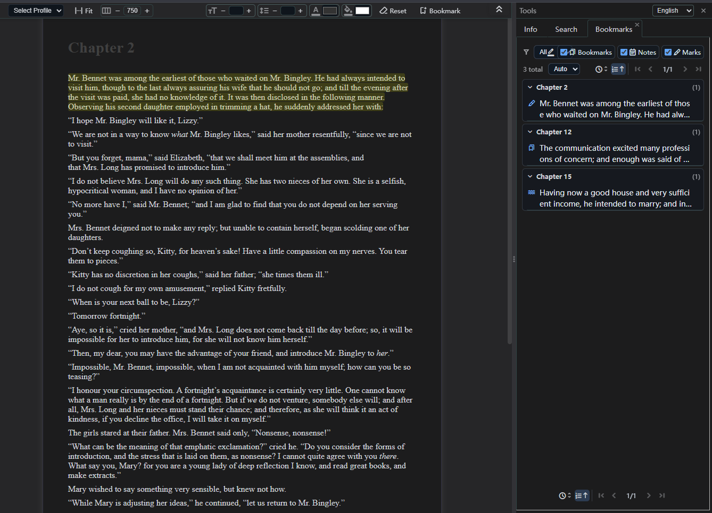

Bookmarks
A bookmark records a position, so you can jump straight back and carry on.
Add a bookmark
- Go to the place you want to remember.
- Click Bookmark on the quick controls bar above the text.
- The current page (or position, in continuous modes) is recorded.
Review and jump
- Click Bookmarks in the left toolbar to open the panel.
- The panel lists every bookmark in this book.
- Click any one and the text jumps there.

Sorting and paging
- Bookmarks can be sorted by time or by position, using the two sort buttons in the panel (Sort by time / Sort by position).
- Many bookmarks are shown page by page; how many per page is set in the Panel Settings section of reading settings.
How bookmarks differ from notes
A bookmark records a position only. To mark a passage or write a note, use Notes & Annotations.